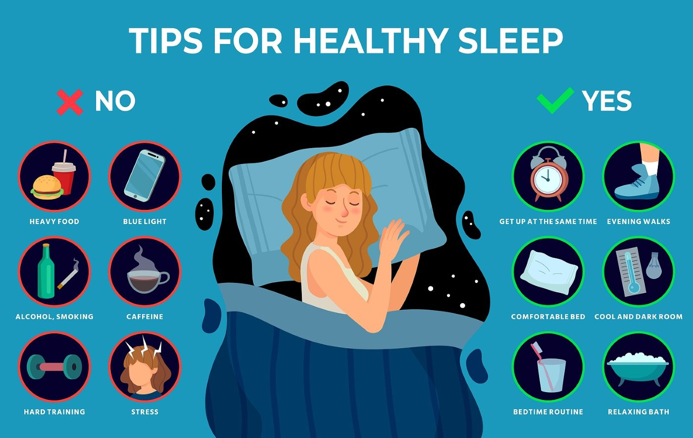

Mental Health & Wellness
Take a quick survey to examine your mental health
Welcome to our website
Introduction
Mental health/wellness is about more than the absence of mental illness. According to the Public Health Agency of Canada, mental health is “the capacity of each and all of us to feel, think, and act in ways that enhance our ability to enjoy life and deal with the challenges we face.” Our mental health/wellness allows us to realize our potential, cope with stress effectively, bounce back from life challenges and be active, productive members of our communities. How each of us defines our mental health/wellness can be very different and quite individualized. It is important to keep in mind, that good mental health/wellness is not about avoiding problems or having the perfect life. Rather, it is about living well and feeling capable despite life’s challenges. Our mental health and our capacity to maintain our mental wellness is based on many factors. Lifestyles that incorporate a holistic approach that focus on our physical, spiritual, emotional, social and intellectual health, place us in the best position to live a healthy, mentally well, life.
Our Services
Articles
-
Article 1 : "The Power of Self-Compassion in Mental Health" by Psychology Today
This article discusses the importance of self-compassion in improving mental health and well-being. It explains what self-compassion is, how it differs from self-esteem, and why it is important. It also provides practical tips and exercises for practicing self-compassion.
-

Article 2 : "Why Sleep is Critical for Mental Health" by Harvard Health Publishing
This article explains the link between sleep and mental health, and why getting enough quality sleep is critical for maintaining good mental health. It discusses the impact of sleep deprivation on mental health and provides tips for improving sleep habits.
-
Article 3 : "How to Practice Mindfulness Meditation for Mental Health" by Verywell Mind
This article explains what mindfulness meditation is, how it can benefit mental health, and provides step-by-step instructions for practicing mindfulness meditation. It also discusses the research supporting the effectiveness of mindfulness meditation for reducing stress and improving mental health.